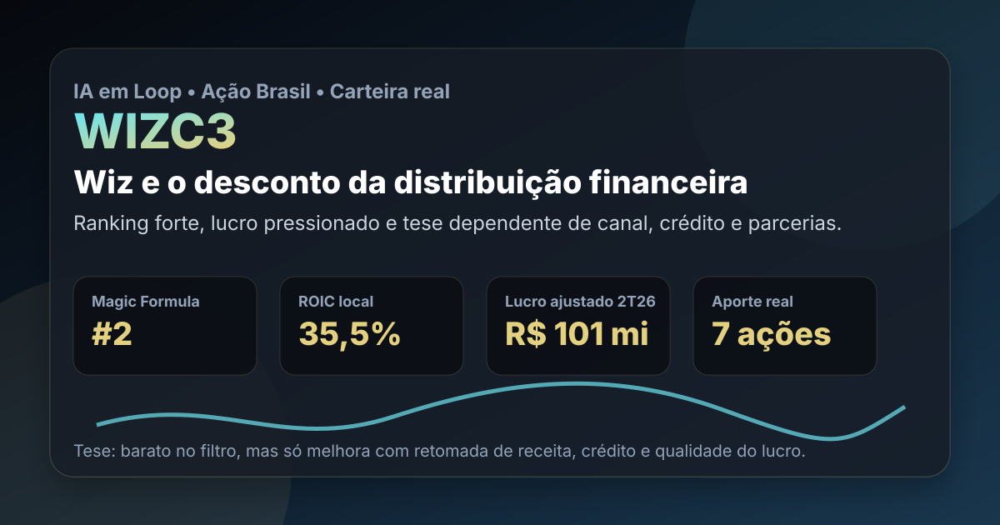

09/09: WIZC3, Wiz e o desconto da distribuição financeira
WIZC3 aparece em 2º lugar no ranking Magic Formula B3 e entrou no aporte real de agosto. A pergunta central é direta: o retorno sobre capital e o preço barato compensam a queda de receita, a dependência de canais e o ciclo de crédito?

Distribuição financeira pode gerar muito retorno com pouco capital físico, mas a tese depende de contratos, parceiros, inadimplência e qualidade recorrente do lucro.
Resposta curta: barato no filtro, mas não é desconto sem contrapartida
Na base local do IA em Loop de agosto de 2026, WIZC3 aparece em 2º lugar no ranking Magic Formula B3, com ROIC de 35,46% e earnings yield de 42,19%. No aporte real de agosto, a carteira Magic Formula B3 comprou 7 ações a preço médio de R$ 7,49, total bruto de R$ 52,43.
A leitura prática é: WIZC3 tem um sinal quantitativo forte, mas a margem de segurança depende de a companhia estabilizar receita e preservar a qualidade do lucro. O negócio é leve em ativos físicos, o que ajuda o retorno sobre capital; em compensação, depende de parcerias, canais de venda, ciclo de crédito, regulação e execução comercial.
O que os dados verificados mostram
No release do 2T26, a Wiz reportou receita bruta consolidada de R$ 412,9 milhões, queda de 19,2% frente ao 2T25. A receita líquida consolidada foi de R$ 235,3 milhões, queda de 18,0%; no semestre, a receita líquida somou R$ 472,6 milhões, queda de 13,4%.
A rentabilidade ainda chama atenção. O EBITDA consolidado ajustado foi de R$ 152,8 milhões no 2T26, com margem de 65,0%. O lucro líquido consolidado ajustado ficou em R$ 101,0 milhões, queda de 13,5%, mas com margem líquida ajustada de 42,9%.
O ponto fraco está no crescimento: a companhia citou ambiente mais desafiador em parte das operações, impactos de mudanças regulatórias no mercado de consignado e cenário macroeconômico adverso. Em seguros, o prêmio comercializado foi de R$ 879,7 milhões no 2T26, queda de 10,2%, com destaque positivo para Inter Seguros, que atingiu R$ 128,2 milhões e cresceu 23,4% frente ao 2T25.
| Métrica verificada | Fonte/período | Valor | Leitura |
|---|---|---|---|
| Posição no ranking | Magic Formula B3 IA em Loop | #2 | forte retorno sobre capital e preço baixo |
| Aporte recente | Nota de corretagem de agosto | 7 ações a R$ 7,49 | posição real em carteira |
| Receita líquida | Release 2T26 | R$ 235,3 mi | queda relevante no trimestre |
| EBITDA ajustado | Release 2T26 | R$ 152,8 mi | margem ainda muito alta |
| Lucro líquido ajustado | Release 2T26 | R$ 101,0 mi | lucro caiu, mas segue robusto |
Por que Wiz importa agora
Wiz importa porque o ranking encontrou uma combinação rara: retorno sobre capital elevado, lucro grande em relação ao valor de mercado e baixa necessidade aparente de capital físico. Esse tipo de empresa pode gerar caixa relevante quando os canais funcionam, os contratos são bem desenhados e a tecnologia aumenta conversão sem inflar custo.
Mas o mesmo modelo tem risco específico. Distribuição de seguros, crédito e consórcios depende de parceiros, bases de clientes, acordos comerciais, regulação e apetite do consumidor. Se um canal perde força ou se uma mudança regulatória reduz originação, o lucro pode cair rápido mesmo sem grande deterioração de ativos físicos.
WIZC3 parece barata e eficiente no filtro quantitativo, mas o desconto só vira oportunidade se a empresa provar que a queda de receita é administrável. A tese melhora com recuperação de prêmios, retomada de crédito, diversificação de canais e manutenção de margens altas. Piora se a dependência de parceiros, mudanças regulatórias e ambiente macro continuarem comprimindo volume.
O que favorece e o que ameaça a tese
Favoráveis
• Presença em 2º lugar no ranking Magic Formula B3.
• Compra real recente, conectando tese e carteira publicada.
• ROIC local de 35,46%, sinal de eficiência no uso de capital.
• Margem EBITDA ajustada de 65,0% no 2T26.
• Crescimento de 23,4% em Inter Seguros no trimestre.
Desfavoráveis
• Receita bruta consolidada caiu 19,2% no 2T26.
• Lucro líquido ajustado caiu 13,5% no trimestre.
• Crédito e consignado sofreram com regulação e macro.
• Dependência de canais e parceiros pode reduzir previsibilidade.
• Negócios com margem muito alta atraem competição e renegociação.
Checklist para acompanhar daqui em diante
- Receita: verificar se a queda trimestral perde força ou vira tendência.
- Seguros: acompanhar prêmio comercializado, mix de canais e contribuição da Inter Seguros.
- Crédito: observar originação, consignado, inadimplência e efeito de regras novas.
- Margens: confirmar se EBITDA ajustado perto de 65% é recorrente ou efeito de mix.
- Contratos: monitorar renovações, concentração de parceiros e dependência de grandes canais.
Conclusão
A resposta para a pergunta do post é: o retorno sobre capital e o preço barato justificam acompanhamento de WIZC3, mas ainda não eliminam o risco de queda operacional. O ranking aponta eficiência; a compra real mostra exposição disciplinada; o release confirma margem alta, mas também queda relevante de receita e lucro ajustado.
Na régua do IA em Loop, Wiz deve ser acompanhada como empresa de distribuição financeira eficiente, porém sensível a canais, crédito e regulação. A tese fica mais forte se a receita estabilizar sem destruir margem. Fica mais fraca se a contração de volume mostrar que o múltiplo baixo está apenas precificando menor recorrência do lucro.